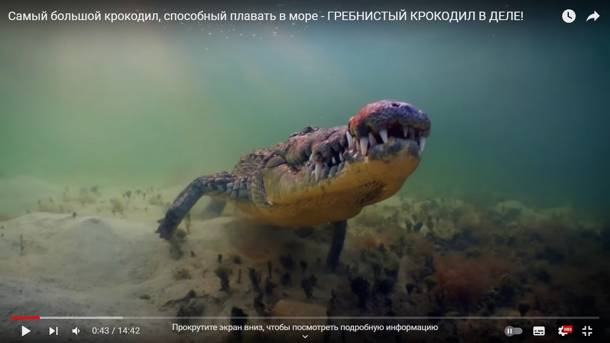
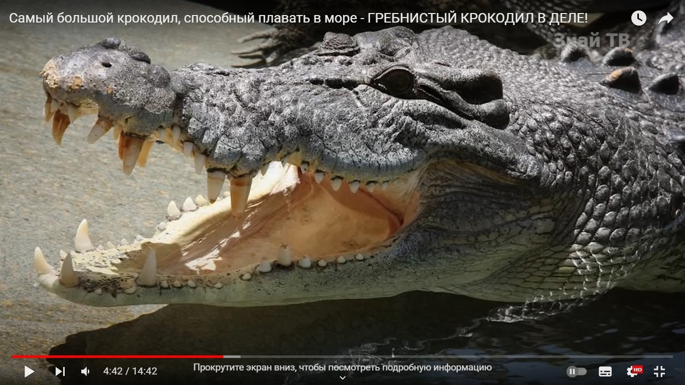
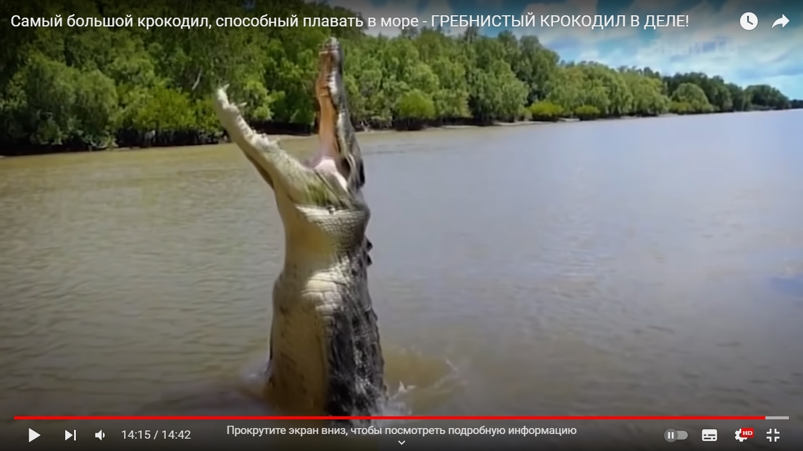

The Beijing Zoo



Population:
Nowadays, about 200 thousand individuals of combed crocodiles live on the territory of Vietnam. Although in our time the combed crocodile is classified as a rare species, it is not on the verge of extinction, as a species.
Habitat:
The most numerous populations of combed crocodiles live within the Indian and Pacific oceans, as well as in northern Australia.
Diet:
The basis of the diet is made up of food items of animal origin, which the predator needs not so little. The most important thing is that the predator feeds exclusively on fresh meat, although in case of severe hunger it can eat carrion.